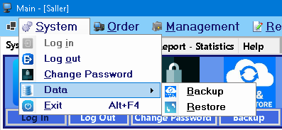
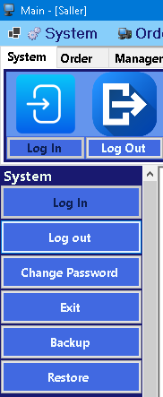
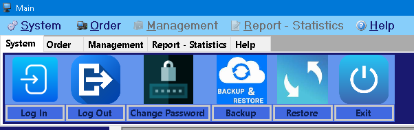

This guide provides instructions on how to perform **Database Backup** and **Restore** operations in the **HK.Huang Sales Management Software**. These functions are critical for data protection and recovery in case of system failures or data loss.
Understanding Backup and Restore
- Database Backup: This process creates a copy of your current database at a specific point in time. This backup file (.bak extension) can be used to restore your data if the original database becomes corrupted or is lost. Regular backups are essential for business continuity.
- Database Restore: This process overwrites your current database with data from a previously created backup file. It is used to recover your data to a prior state.
Accessing Backup and Restore Functions
You can access the Backup and Restore functions through various entry points in the application:
1. Via Menu Bar

Image: Backup and Restore options available in the application's menu (e.g., under 'File' or 'Tools').
2. Via Toolbar Buttons

Image: Dedicated buttons for Backup and Restore on the main toolbar for quick access.
3. Via Management Tab

Image: Backup and Restore functionalities grouped under a specific tab, such as 'Management'.
How to Perform a Database Backup
To create a backup of your database:
- Click on the **Backup** option from the menu bar (mnuBackup_Click), toolbar, or relevant tab.
- A **Browse For Folder** dialog box will appear (triggered by FolderBrowserDialog). Navigate to the desired location where you want to save your backup file.
- Click OK to confirm the folder selection.
- The system will then create a database backup file (e.g., ElectronicsStore_YYYYMMDD_HHMMSS.bak) in the chosen directory.
- A notification message will confirm if the "Data backup successful!" or "Data backup failed!" (as handled by the MessageBox).
Tip: Choose a secure and easily accessible location for your backups, preferably on a separate drive or network location.
How to Perform a Database Restore
To restore your database from a backup file:
- Click on the **Restore** option from the menu bar (mnuRestore_Click), toolbar, or relevant tab.
- An **Open File** dialog box will appear (triggered by OpenFileDialog), prompting you to select a backup file. The dialog will filter for files with the .bak extension.
- Navigate to the location of your backup file and select the desired .bak file.
- Click Open.
- The system will then overwrite your current database with the data from the selected backup file.
- A notification message will confirm if the "Data recovery successful!" or "Data recovery failed!!" (as handled by the MessageBox).
Warning:
Restoring a database will **overwrite** all existing data with the data from the backup file. Any changes made since the last backup will be lost. Ensure you have a recent backup of your current data if you are unsure, or proceed with caution. Only perform a restore operation when absolutely necessary.